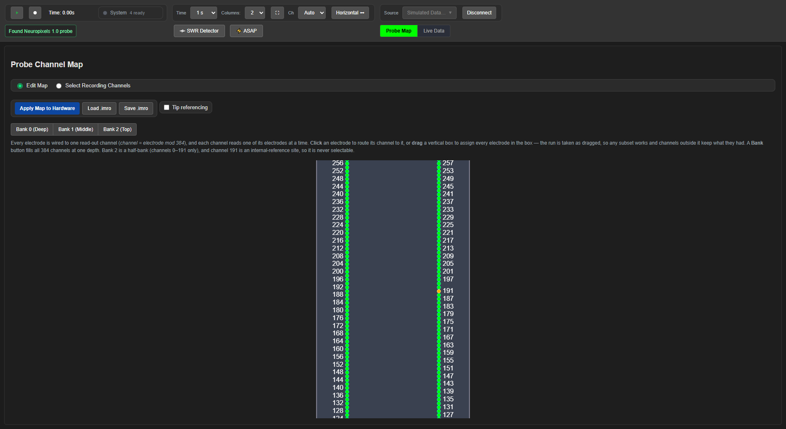

Tutorial — a Neuropixels 1.0 probe on the PXIe basestation, step by step#
The companion to Tutorial-OneBox-NPX2.md, for the other probe and the
other transport: a Neuropixels 1.0 probe in a PXIe chassis, with the NI-DAQ card alongside. The
sequence is the same — connect, choose electrodes, apply, stream, arrange the live view, listen,
finish — and this page says what is different on a 1.0 probe at each step.
Captures. The per-step screenshots for this walkthrough have not been taken yet; the operator is producing them with the narrated video. The 1.0 screenshots on this page are the existing ones from
Neuropixels-1.0.mdandGUI-Guide.md, dated in their filenames. Everything stated here about behavior was verified on the rig on 2026-09-02, with the 1.0 probe on the PXIe basestation and a 2.0 on the OneBox at the same time.
1. Launch, and choose the PXIe#
Start SpikesPeak and click Source. With only the PXIe attached the menu offers Neuropixels — the basestation and the probe are both detected, and the row says what was found — and, because the NI-DAQ card lives in the same chassis, PXIe with NI-DAQ, which adds the card's analog and digital inputs as extra streams beside the probe. Choose the latter if you want the NI-DAQ channels (stimulation pulses, sync, anything on the BNCs) recorded with the probe.
If a OneBox is attached at the same time the menu says so and lists the basestations by name — OneBox, PXIe, PXIe + NI-DAQ — as in the 2.0 tutorial; SpikesPeak never guesses between them.
Connecting opens the chassis slot, finds the headstage and the probe, and writes the default map. The Probe Map tab opens on it.

2. The 1.0 map: one shank, three banks, two columns#
A 1.0 probe has a single shank of 960 electrodes in two columns (left and right), read out 384 at a time. The electrodes are grouped in three banks of 384 — bank 0 nearest the tip, bank 1 above it, bank 2 (a half bank) at the top. The default map is bank 0.
- Edit Map mode, then drag along the shank to route a run of electrodes. On a 1.0 the drag is per column: drag on the left half of the shank for the left column, the right half for the right column. Rows you drag over take over their channels; channel 191 is the internal reference and is never routed, so a drag across it leaves it alone.
- Scroll with the wheel to move along the shank. Bank 1 starts at row 192, bank 2 at row 384.
- The Bank 0 / Bank 1 / Bank 2 buttons route all 384 channels to one bank in a click.
The rest of the map page — Apply, Save/Load .imro, tip referencing — works exactly as on the 2.0;
the walkthrough is in Neuropixels-1.0.md §3–4.
3. Apply, and stream#
Apply Map to Hardware writes the selection to the probe and reads it back; the status line reports it. Then Live Data and Play.

The difference from a 2.0 is the bands: a 1.0 probe produces AP (spikes, 0.3–10 kHz) and
LFP (0.5–500 Hz) on the probe itself, so both arrive as separate streams and there is no
Bands menu — pick AP Band or LFP Band per column from the column's Stream dropdown. A 2.0
produces one raw stream and derives its bands in software, which is what that menu is for.
With PXIe with NI-DAQ the same dropdown also offers NIDAQ AI/O (the analog inputs, in volts)
and NIDAQ DI/O.
4. Arranging the live view#
Everything in the 2.0 tutorial's sections 6–8 applies unchanged: columns, the per-column control chips and pin, the Stream and View dropdowns, the channel pager, Ch for density, Time for history, the vertical layout, and the heatmap. The one 1.0-specific note: there is no Shank dropdown to speak of — a single-shank probe has nothing to choose — so columns differ by band and by which stretch of the shank their pager sits on.
5. Listening#
Open the ♪ dock and click a channel label in the live view. On a 1.0 you hear that channel's AP
band, which the probe already provides; nothing has to be turned on first. The rest —
Thresh, Volume, choosing the output device — is in SpikeAudio.md.
6. Finish properly#
Pause, then Disconnect. Disconnect is disabled while streaming, on purpose. Disconnecting
releases the chassis slot; only then close the window. Never kill the backend from Task Manager with
a probe connected — see OneBox-NPX2.md §1 for the rule and its cost, which
applies to the PXIe basestation just the same.
Behavior verified on the rig 2026-09-02 (NP1.0 on the PXIe basestation; NP2.0 on the OneBox alongside). Per-step screenshots and the narrated video to follow.